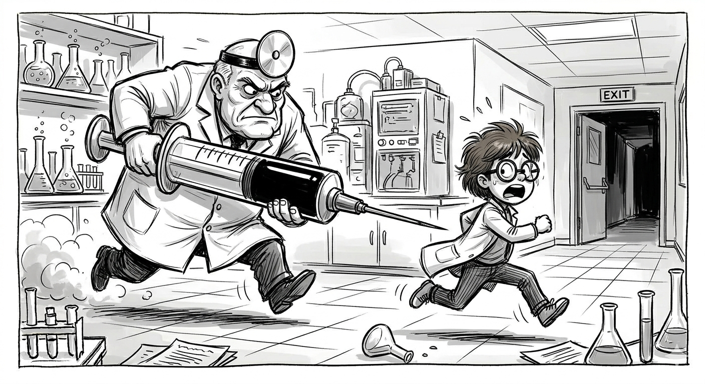
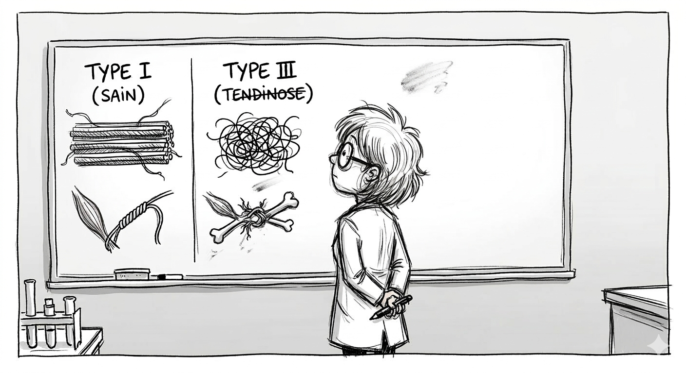
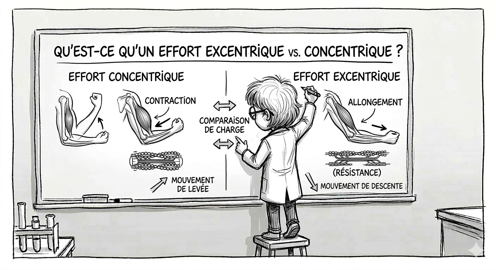

Tendon, chimie et trahison : Pourquoi votre infiltration est peut-être une erreur
Vous souffrez d'une tendinite chronique ? On vous a proposé une infiltration pour "calmer le jeu" ? Avant de dire oui, laissez-moi vous raconter comment, en passant du labo de chimie à la salle de sport, j'ai compris que la solution n'est pas dans l'aiguille, mais dans la mécanotransduction.
Il y a quelques mois encore, j'étais docteur en chimie. Dans mon monde, une molécule bien ciblée pouvait régler un problème complexe. Puis, j'ai entamé ma reconversion en kinésithérapie. C'est là que j'ai pris une claque : le décalage entre la science des tissus et la pratique médicale de terrain est parfois abyssal.
J'ai été sidérée du nombre d'amies qui se sont faites prescrire des infiltrations de corticoïdes sans une seule séance de kinésithérapie. En France, selon la HAS (2023), 26 % des patients reçoivent une infiltration sans aucun traitement de fond. C'est un peu comme mettre un coup de peinture sur une poutre qui pourrit en espérant qu'elle redevienne solide.

1. Anatomie d'une défaillance : Ce n'est pas une inflammation
Le premier choc scientifique, c'est le mot : "Tendinite". En chimie, le suffixe -ite désigne une inflammation. Or, dans la majorité des douleurs chroniques, l'inflammation est absente. On devrait parler de Tendinose.
La nuance est capitale. Votre tendon n'est pas "en feu", il est structurellement désorganisé. En tant que chimiste, je regarde la matrice extracellulaire :
- Collagène de Type I : Les "soldats d'élite". Des fibres parfaitement alignées et solides. C'est le tendon sain.
- Collagène de Type III : Les "bricoleurs du dimanche". Des fibres anarchiques et fragiles, produites en urgence pour boucher les trous. C'est la tendinose.

2. Le procès de l'Infiltration : Le permis de se blesser
L'infiltration de corticoïdes est un puissant anti-douleur, mais elle inhibe aussi la synthèse protéique. Pour un chimiste, c'est une hérésie : on bloque les ténocytes (les ouvriers du tendon) au moment précis où ils devraient reconstruire la charpente.
Les études (Coombes et al., 2010) montrent que l'infiltration gagne à court terme mais perd à un an face à la kiné. On crée un tendon silencieux, mais structurellement plus fragile. On éteint l'alarme alors que l'incendie couve sous les spaghettis de Type III.
3. La Mécanotransduction : Le mouvement comme catalyseur
La solution ? Elle est dans la mécanotransduction. C'est le processus par lequel nos cellules transforment un signal mécanique (le poids, la tension) en un signal chimique (production de collagène Type I).
C'est ici que l'exercice excentrique intervient. En imposant une contrainte contrôlée, on force le tendon à recycler son collagène Type III anarchique pour recréer une structure Type I solide. C'est de la bio-ingénierie pure : on utilise la contrainte pour réparer la chimie du tissu.

Conclusion : Reprenez le pouvoir sur votre chimie
Ne soyez pas une statistique. Si on vous propose une infiltration sans kiné, rappelez-vous qu'on ne répare pas une structure vivante en l'anesthésiant. On la répare en la sollicitant intelligemment. Armez-vous de patience, de poids, et faites confiance à la capacité de votre corps à réorganiser sa propre matière.